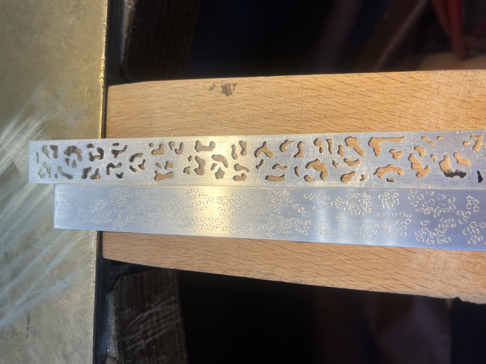

Zilveren armband met panterprint details.
Voor deze armband heb ik het panterprint patroon op twee manieren uitgewerkt. Door middel van zagen en vijlen heb ik de basisvormen van de panterprint uit het zilver gehaald, waardoor het patroon een duidelijke structuur en diepte kreeg. Vervolgens heb ik met een frees extra details aangebracht, zodat het panterprint motief meer contrast, textuur en verfijning kreeg.
